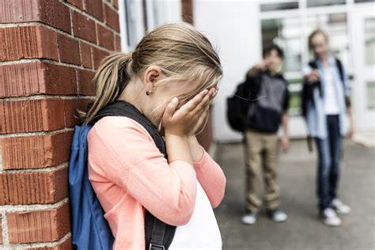

El acoso escolar tiende a naturalizar la violencia, la crueldad y la injusticia en el ámbito escolar. Tiene efectos negativos en la víctima, en el agresor y en los espectadores.
Consecuencias para los agresores
Las principales consecuencias para los agresores son:
- Dificultad para establecer relaciones saludables.
- Tendencia a desarrollar una personalidad con poco control sobre la agresión.
- Propensión a involucrarse en conductas antisociales o delictivas.
Consecuencias para las víctimas
Las principales consecuencias para las víctimas son:
- Autoestima baja y falta de seguridad.
- Ansiedad e inestabilidad emocional.
- Trastornos de sueño y de la alimentación.
- Dolores de cabeza y agotamiento físico.
- Disminución en el rendimiento académico.
- Aislamiento y problemas para socializar.
- Desmotivación y desinterés.
Consecuencias para los espectadores
Las principales consecuencias para los espectadores son:
- Insensibilidad ante las agresiones hacia sus compañeros y normalización de la violencia.
- Desarrollo de pasividad frente a situaciones de injusticia.
- Comportamiento inestable, ya que en ocasiones apoyan al agresor y en otras pueden ser aliados de la víctima.
- Culpa o remordimiento por no intervenir.
